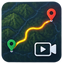
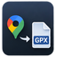
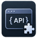
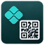
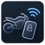
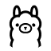
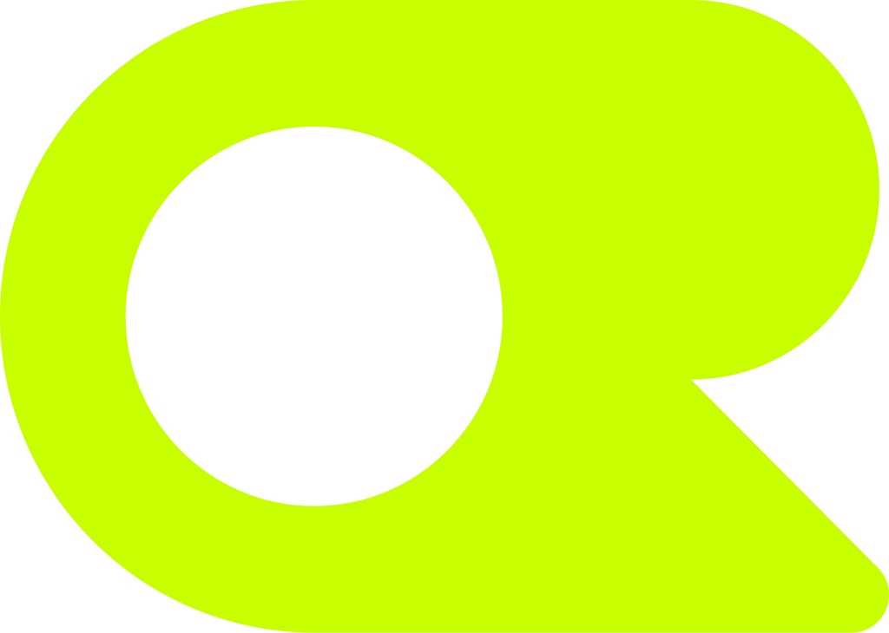
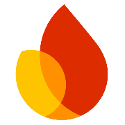

Sentinel-2 cloudless · EOX · © OpenStreetMap
Sentinel-2 cloudless · EOX · © OpenStreetMap
Editor de rotas e vídeo
Desenhe seu Caminho
Desenhe no mapa ou importe um GPX e transforme o trajeto em um vídeo animado.
Portfólio & oficina digital
Trabalho com cibersegurança e uso inteligência artificial para desenvolver e testar automações. Na oficina, construo ferramentas, jogos e experimentos para a web.
Sentinel-2 cloudless · EOX · © OpenStreetMap
Editor de rotas e vídeo
Desenhe no mapa ou importe um GPX e transforme o trajeto em um vídeo animado.

Desenhe seu CaminhoMapa & vídeo Uma rota desenhada ou importada vira vídeo, com câmera e sobreposições configuráveis. Abrir editor
Google Maps para GPXFerramenta de rota Converta um link de rota do Google Maps em um arquivo GPX para importar no Desenhe seu Caminho. Abrir conversor
Riq APIExtensão de navegador Respostas simuladas de API para testar carregamento, erro e estados vazios na interface. Projeto local
Gerador de PixUtilitário Monte e personalize seu QR Pix, depois baixe a imagem. Abrir ferramenta
Partida remotaGuia técnico Guia sobre um sistema de partida por controle de 433 MHz. Ler guia
Ollama
OpenRouter
Firebase